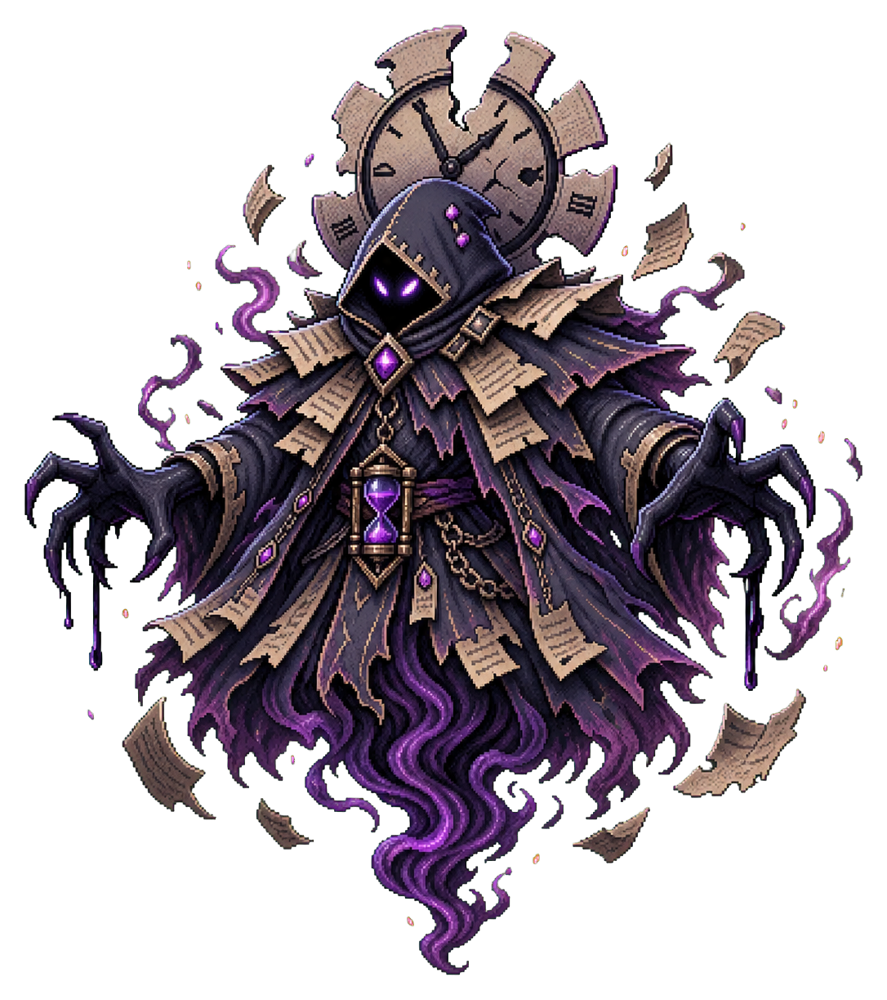
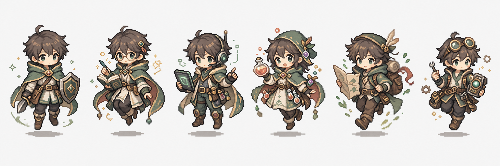

2026-06-29
今日のクエスト
TODAY / MISSION SPINE
今日の攻略
HumanとAgentの引き継ぎを、今日の流れに沿って見渡します。
34 / 50クエスト完了
MISSION SPINE—
CAMPAIGN MAP—
B / Soft Ops Companion
Deskside Companion
小さな相棒AIと一緒に、今日の生活タスクを静かに整理します。ゲーム感は残しつつ、普段使いの道具に近い見た目です。

Compact Deadline Wraith
Reward 18 Gem
日付更新
今日のクエストを確認中
QUEST TREE
目的とサブQuest
大きな目的を、親Questと小さな行動に分けて見渡します。
Google Calendar
今日の予定
習慣ログ
良い/悪い行動を記録今日の約束
日付で復活する予定一回だけ
期限つきの単発ごほうび
Gemで交換する休憩現在のボス
0 撃破
締切
Compact Deadline Wraith
時間と未完了ログをまとった影。
HP 71/100
報酬 18 Gem
戦闘ログ
ボス図鑑
ローテーション中Command Battle
タスクでMPをためて、コマンドで戦う
Deadline Wraith
Rage 0
HP
100/100
Astra / Sentinel
Turn 1
HP
47/50
MP
12/80
COMMAND
進行中
キャラカスタム
128 Gem
装備位置
役職プレビュー

Gemショップ
128 GemFORMATION / DERIVED VIEW
作戦編成
SOCIAL
プロフィールと仲間
PARTY
パーティを作る
共同チャレンジ
ROADMAPNext
仲間と続ける目標
パーティ基盤の安定後に、共同進捗とボス戦へ接続します。
装備
AI・サービス連携
接続確認中
初回セットアップ
外部サービスをつなぐ
QuestForgeのログイン後、サービスを接続して対象を選び、プレビューを確認してから同期します。
- 1QuestForgeにログインGoogle同期
- 2サービスを接続OAuth許可
- 3対象を選択カレンダー・リスト・親ページ
- 4プレビューして同期確認後に実行
QuestForge MCP
いつものAIからクエストを操作
接続先をAIのMCPまたはカスタムコネクタ設定へ登録します。初回だけQuestForgeのGoogleログインで許可すれば、以後は同じアカウントのタスクを利用できます。
AI側へ登録すると、認証画面が自動で開きます。
外部サービス
カレンダーやタスクサービスをプレビューし、確認してから同期します。
同期ルール
サービスごとの取り込み方とQuestForge内の変換先。
同期対象
同期プレビュー
外部データをQuestForgeのクエスト/ログへ変換した結果。
同期ログ
実データ同期の作成・更新・競合結果。
開発者・拡張機能設定
OAuth付きでタスク、スコア、報酬、イベントを操作。
GET /v1/quests
AIエージェントが今日のタスク確認や完了記録を実行。
tool: score_quest
権限付きで画面カード、Webhook、同期処理を追加。
permissions: quests:write
スコア、作成、報酬交換、レベルアップを外部通知。
event: quest.scored
OpenAPI Surface
GET /v1/quests?due=today
POST /v1/quests
PATCH /v1/quests/{questId}
POST /v1/quests/{questId}/score
GET /v1/events
MCP Tools
list_today_quests
create_quest
score_quest
get_character_state
buy_reward
Plugin Manifest
{
"name": "questforge-calendar-sync",
"permissions": ["quests:read", "quests:write"],
"events": ["quest.scored", "quest.rolled_over"],
"uiSlots": ["quest.detail", "dashboard.sidecar"]
}